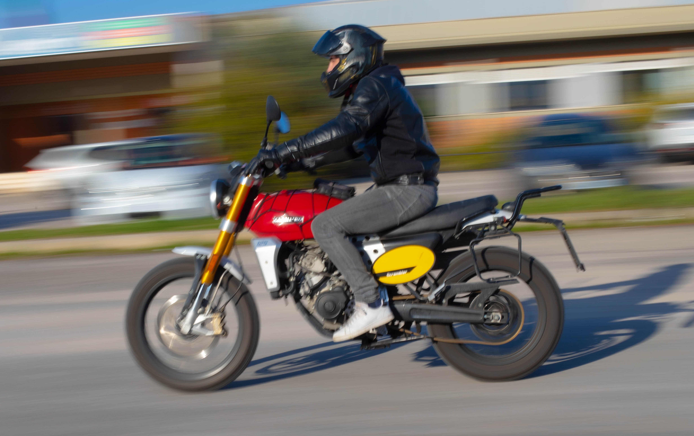
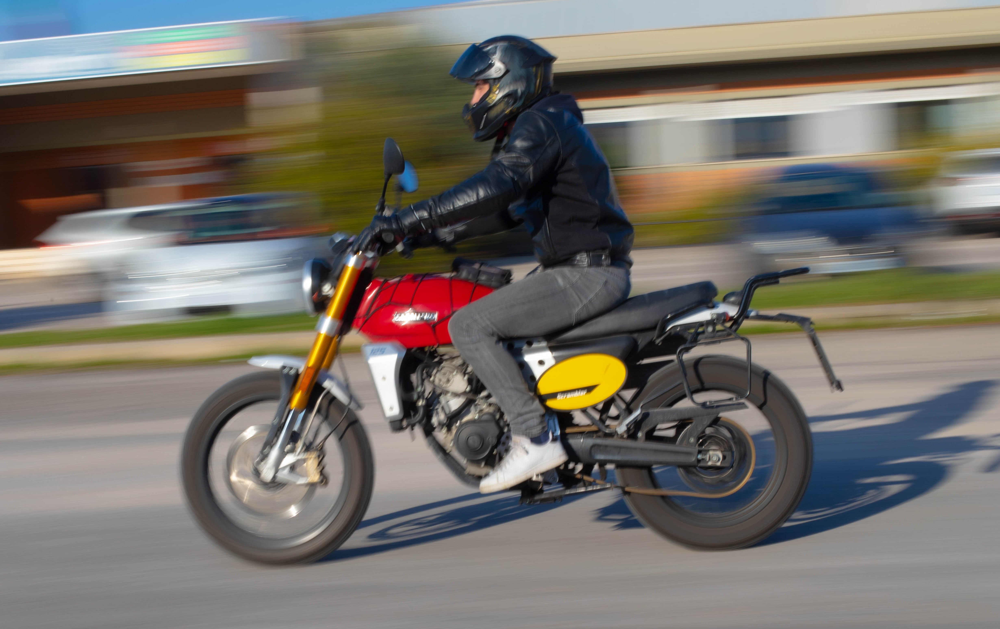
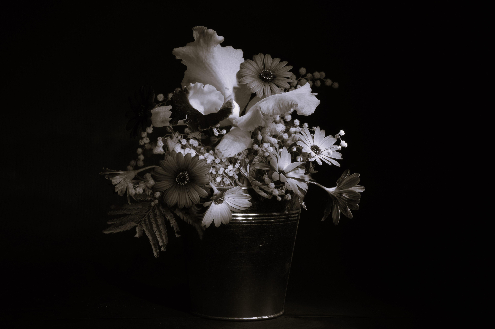
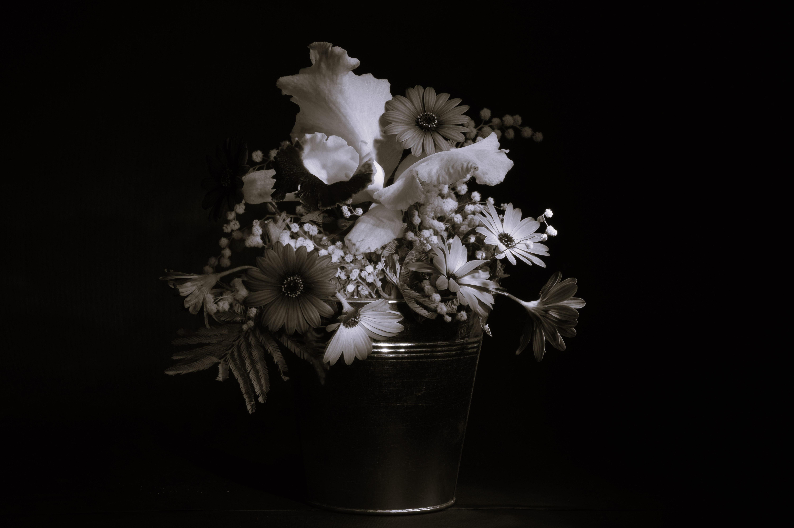
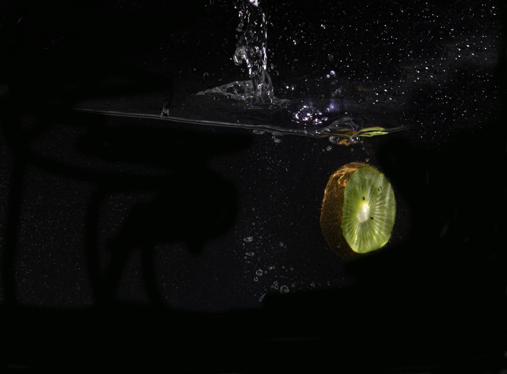
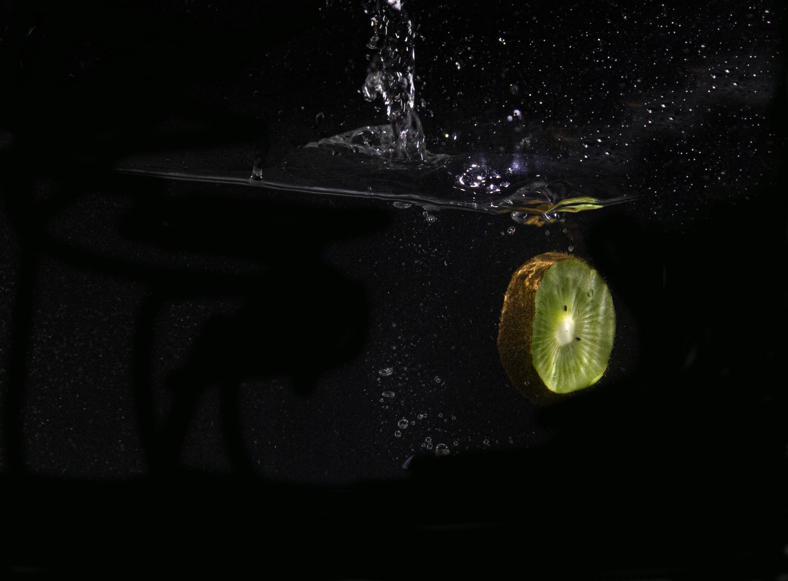
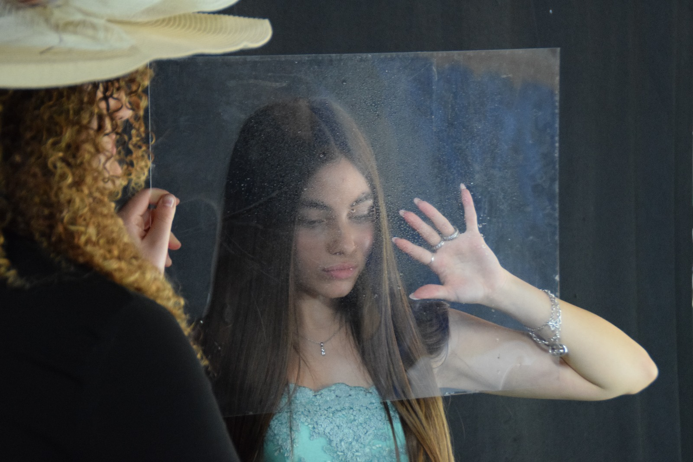
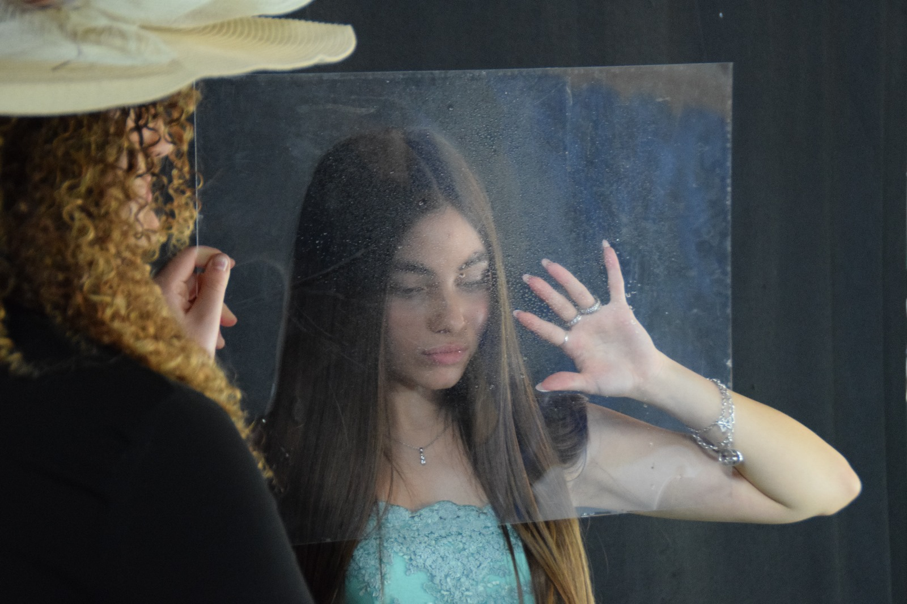

Le foto sono state divise in 9 categorie principali: gita a Ninfa, tecnica
del bokeh, tecnica del panning, still life, ritratti, lunghe esposizioni,
la natura, high speed photography, backstage.
È possibile visualizzare una sezione selezionando la scheda e
cliccando il bottone "Carica sezione".


Una tranquilla scena fluviale con il suo riflesso cristallino. Gli alberi maestosi risaltano un contrasto tra autunno e primavera. Un luogo ricco di storia e fascino culturale.


Un ruscello dalle acque limpide, riflette la vegetazione rigogliosa della flora primaverile. Un angolo sereno con un laghetto verdeggiante in una fresca mattina ai giardini di Ninfa.


Un albero in piena fioritura primaverile, con delicati fiori bianchi e rosa che contrastano con il verde circostante. Una fitta foresta di bambù che svetta verso il cielo, un angolo suggestivo e tranquillo dei giardini di Ninfa.


Un bicchiere di liquore accanto a un pezzo di cioccolato, immersi in un'atmosfera intima con luci bokeh che aggiungono magia alla composizione. Un'installazione luminosa catturata con la tecnica del bokeh, creando un'atmosfera eterea e incantevole.


 


I motociclisti si muovono rapidamente sullo sfondo sfuggente della scuola. La macchina attraversa l'incrocio, con il paesaggio che passa velocemente.


Foto in still-life che catturano l'eleganza della semplicità, con una teiera in ceramica, sacchetti decorativi e foglie verdi. Un tocco di tradizione è rappresentato dalla bottiglia di Vecchio Amaro del Capo, posta davanti a uno sfondo floreale delicato. La luce morbida esalta i dettagli e crea un'atmosfera intima e calda.
 


Immagini di natura morta che catturano l'essenza della bellezza floreale. Con l'uso di un'illuminazione drammatica e uno sfondo scuro, i fiori risaltano in tutta la loro vivacità e delicatezza. La tecnica still-life mette in risalto i dettagli e la texture di ogni petalo, creando un'atmosfera raffinata e contemplativa.


Il confronto delle tre modelle messo in risalto dalla lucentezza delle bolle.


Il ritratto "dipinto" su un brillante albero di mimosa.


L'imponenza e la bellezza senza tempo dei monumenti storici. Ogni scatto mette in risalto l'architettura straordinaria e l'importanza culturale di queste strutture, che raccontano storie di epoche passate e arricchiscono il nostro patrimonio.


L'acqua calma riflette perfettamente il cielo notturno, creando un doppio spettacolo di luci scintillanti. Un gioco di luci e ombre dove l'infinito del cosmo si unisce alla serenità della terra, regalando una vista mozzafiato e un momento di pura magia naturale.


Un affascinante panorama notturno che svela la bellezza misteriosa del cielo stellato. Le costellazioni scintillano come diamanti nel buio, offrendo uno spettacolo mozzafiato e un momento di riflessione sotto l'infinito del cosmo.


La bellezza vibrante di queste piante rosse, mostrando le sue sfumature intense e la sua forma elegante. Ogni scatto mette in risalto la sua presenza vivace, rendendo omaggio alla forza e alla vitalità che queste piante rappresentano nel mondo naturale.


L'unicità di ogni elemento della natura ha un valore prezioso. Che sia l'agilità di un ragno o l'eleganza di un papavero, la natura offre sempre qualcosa che stupisce.


Viene ritratta la delicatezza di un fiore rosa accanto a un insetto posato su fiori viola. La combinazione dei colori e l'interazione tra il fiore e l'insetto celebrano la bellezza e l'equilibrio dell'ecosistema naturale, catturando un momento di pura serenità.

I pomodori, sospesi nell'acqua, con le gocce che danzano intorno a loro, catturate nella loro bellezza dinamica attraverso la fotografia ad alta velocità.
 


I kiwi dopo l'impatto sull'acqua, con la loro polpa e i semi che sembrano delle gemme, congelati in un momento di impatto dinamico.


Tre istanti vibranti: la frutta tuffata nell'acqua, un mare di colore e freschezza che si diffondono nell'acqua in un caleidoscopio di sensazioni.


Fotografi in azione mentre catturano l'effimero incanto delle bolle di sapone, trasformando l'ordinario in straordinario attraverso l'obiettivo della loro creatività.

 

Preparazione per catturare l'azione esplosiva della frutta che si tuffa nell'acqua, pronti a immortalare l'istante fuggente con la tecnica ad alta velocità. Rifiniture delle posizioni della modella per lo scatto perfetto.


Alla ricerca della posizione perfetta per uno scatto di gruppo, cercando di catturare l'attimo fuggente. La scelta della foto ideale spesso richiede molto tempo e impegno.